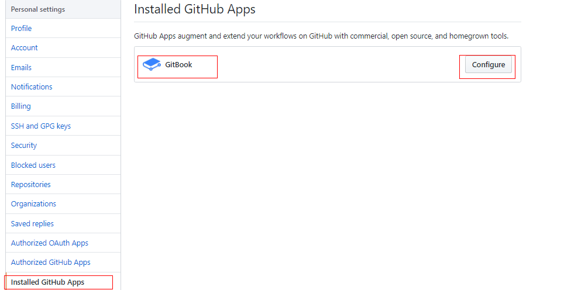
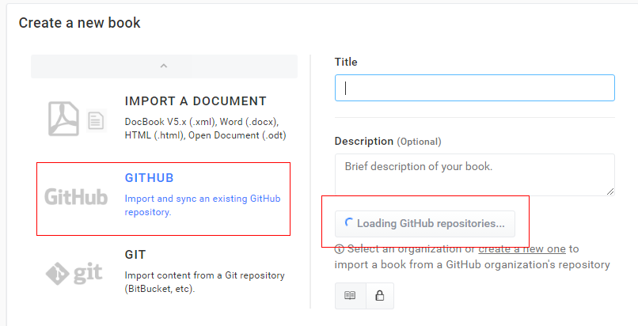
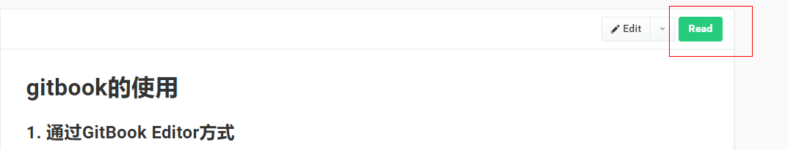

gitbook书籍发布到github
当你写好文章之后，现在只能是本地跑，如果想发布到github和在线预览，可以吗？
答案是 肯定的。
首先你在github上创建一个项目，然后把本地gitbook的代码上传到这个项目，需要保证目录结构是这样的
├── README.md 是对书籍的简单介绍 ├── SUMMARY.md 是书籍的目录结构 ├── other目录/other.md ├── other.md之后使用Github账号登录gitbook，登录成功之后，需要在github上面授权安装gitbook，点击你个人头像，下面有个 account setting，进入之后左侧点击 github，如图
gitbook配置
github配置  按照步骤一步步来
在github授权gitbook之后，在gitbook上面创建一本书，选择从 github导入项目，然后 loading github repo选择是你的gitbook项目，之后点击完成； 
稍等片刻，大功告成，点击 read可以直接在线预览，之后你每次只要提交到github，gitbook就能实时更新 
未完待续。。。